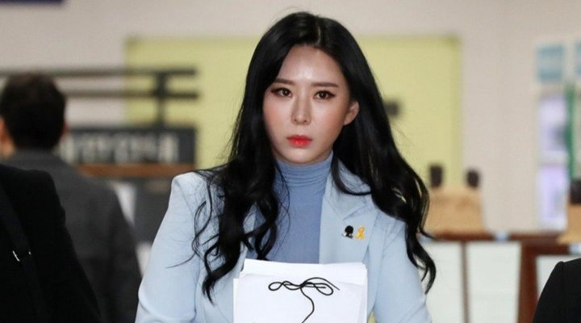
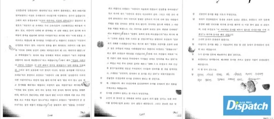
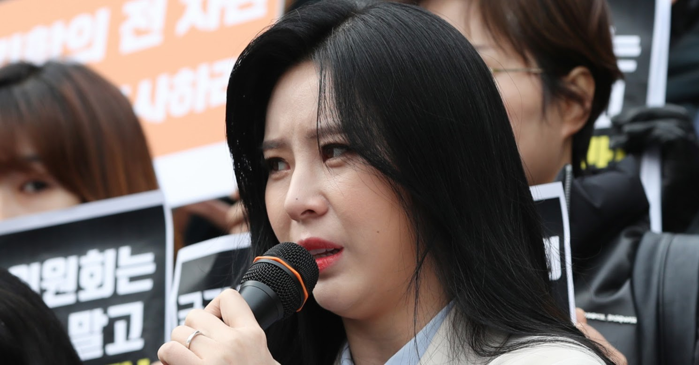

On March 7, 2009, actress Jang Ja Yeon, known for her role in Boys Over Flowers, died at the age of 29. She was hanged at her home in Seongnam by her older sister, with whom she shared her residence. Jang Ja Yeon left behind a lengthy document that revealed 31 names of high-profile personnel in the entertainment industry who had sexually abused her. She claimed that her manager Kim Sung Hoon had regularly beaten her and forced her to have sex with a number of CEOs and media executives. After Jang Ja Yeon’s death, police launched an investigation into her cause of death and her sexual abuse claims.
Jang Ja Yeon’s cause of death was ruled a suicide, as investigators found no evidence of foul play. Over 40 police officers looked into Jan Ja Yeon’s case for four months and the prosecution office additionally assigned a special investigative team to the case. None of those who were named by Jang Ja Yeon were found guilty; the court ruled that Jang Ja Yeon’s allegations lacked evidence. Only the CEO of Jang Ja Yeon’s agency and Jang Ja Yeon’s manager, Kim Sung Hoon, were indicted for violence and defamation. The CEO received 4 months in prison and 1 year of probation, for physically abusing the actress. The manager received 1 year in prison, 2 years of probation, and 160 hours of community service for defaming the CEO.
In June 2018, Yoon Ji Oh, a friend of Jang Ja Yeon who was an actress from the same entertainment company, shared her story with the public for the first time. She claimed to have witnessed Jang Ja Yeon being sexually assaulted on the birthday of their agency’s CEO. Yoon Ji Oh allegedly testified 13 times to the police and prosecution during the initial investigation, but her statement was rejected. She believes it was because the assailant has close ties to the prosecution. The prosecutor who was in charge of the 2009 case stated that the Ji Oh’s testimonies were not accepted due to inconsistencies. He claimed that she had changed details of her testimony, including her description of the assailant.
The prosecutor also admitted that “Cho” (the suspected assailant) was his acquaintance, but he denied any bias toward him. On June 26, 2018, “Cho” was indicted for sexual harassment charges. Charges against “Cho” had been dropped in the past, but the re-investigation acknowledged the allegations. In March 2019, Dispatch released photos taken from CCTV videos during Jang Ja Yeon’s final days. A week before her death, Jang Ja Yeon met with a former manager of her former agency, Yoo Jang Ho, several times in the hopes that he would help her expose those who had wronged her. Jang Ja Yeon and Yoo Jang Ho met on February 28, at his office in Songpa. This is where Jang Ja Yeon allegedly gave Yoo Jang Ho a pile of documents about her sex slavery contract.
On March 1 2009, Yoo Jang Ho took these documents to the MBC Drama Center in Ilsan. He met Lee Mi Sook here, who was filming her drama, East of Eden. In his police testimony, Yoo Jang Ho claimed he did not show the documents to Lee Mi Sook. Instead, he talked about Jang Ja Yeon’s CEO, Kim Jong Seung, and commented on the “bad things” Kim Jong Seung was doing to his rookie actor. On March 2, Jang Ja Yeon again met with at the office Yoo Jang Ho. Chatroom messages between Jang Ja Yeon and her close friends, including her friend “Ms. Lee“, reveal that her outlook was hopeful. She told Ms. Lee that Yoo Jang Ho was preparing to help her take action against Kim Jong Seung and get her released from her contract. Jang Ja Yeon believed that her contract would be terminated, following the document that she wrote outlining everything that had happened to her. This document became known as her suicide note. In March, Dispatch released four pages of this document that detail her sexual abuse at the hands of her CEO, her feelings of powerlessness, and more.
At the time of her death, the document in which she detailed her abuse was believed to be a suicide letter, but experts have since stated that this is not the case. Her family members suspect that Jang Ja Yeon may have been coerced or coached into writing what she wrote, in the way she wrote it.
In 2009, the family wished for
Jang Ja Yeon’s
death, and the scandal surrounding it, to pass quietly. They demanded that the note be burned,
and on March 12,
2009, Yoo Jang Ho
pretended to follow the families wishes and burned the original copy in front of the family. However, the next
day, Jang Ja Yeon’s suicide letter was on the news again. KBS 9PM News ran an exclusive report on how they
found
the burned and
blackened document outside of Yoo Jang Ho’s office, in a trash bag. Dispatch was able to obtain the final text
message Jang Ja Yeon received before she died. It was sent on March 7, 2009 at 3:34PM. It was two hours before
Jang Ja Yeon died.
" I think you’ll meet someone with me on Monday, March 9. Please clear your schedule for the afternoon.
Call
me Monday morning."– Yoo Jang Ho
That “someone” referenced in the text messages was a Producer (PD) for KBS, MBC, and SBS – Jung Se
Ho.
Yoon Ji Oh says she will take legal action against malicious commenters, bashing Yoon Ji Oh and her character, claiming she had ulterior motives for speaking up about the case. In March 2019, Yoon Ji Oh posted pictures of malicious comments made about her on Instagram, saying she would take legal action against those making these comments. Yoon Ji Oh is, so far, the only witness in Jang Ja Yeon’s case who has been willing to come forward. Going public has put Yoon Ji Oh in a potentially dangerous situation that has her fearing for her life.
This prompted her to post a psychological diagnosis she received, on her official Instagram account. She shared that in order to receive her medical record certificate, she received an examination from a clinical psychologist which will have strong legal power in case anything happens to her. She feels it is necessary to take such measures because, in the past, 3 additional actors passed away due to suicide at The Contents Entertainment, the agency Yoon Ji Oh and Jang Ja Yeon were both signed to. Yoon Ji Oh claims that 2 of these people were ready to tell the truth about the case.
Actress Lee Mi Sook had remained silent on this issue for the last 10 years, but in March she made a statement conveying her worries about speaking up and her willingness to take part in additional investigations. Yoon Ji Oh gave her thoughts about statements made by Lee Mi Sook, who Yoon Ji Oh claims knew about what was happening to Jang Ja Yeon. She also mentioned more people who hold vital information about the case, and encouraged them to privately take part in the re-investigation. Former TV Chosun CEO Bang Jung Oh reportedly called and met with Jang Ja Yeon frequently before her death, then had someone cover this connection up for him. One of Jang’s good friends explained that Bang Jung Oh was mentioned numerous times in Jang Ja Yeon’s diary.
Many suspect that he could be “President Bang’s son”, mentioned in Jang Ja Yeon’s document, whom Jang Ja Yeon was forced to serve alcohol to. Shim Mi Young, who goes by the names Shim Min Ji or Madame Shim, is the founder and CEO of the luxury fashion brand L’inoui. She is considered one of the most powerful women in Korea, due to her connections with politicians, celebrities, news outlets, and CEO’s. She has reportedly has ties to Seungri’s scandal and to Jang Ja Yeon’s case .